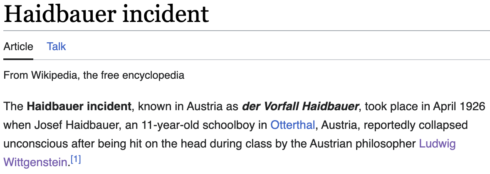
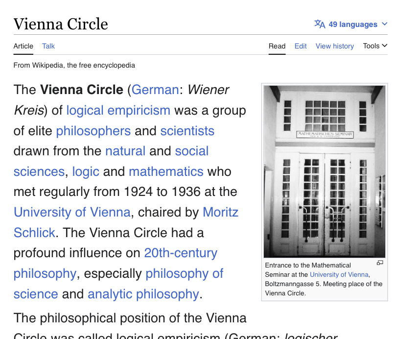

(i do not own the rights to this image)
things I believe
these form the basis for my axiomatic moral system, in case you were wondering how i became who i am
there is no essential difference betwen aesthetics and morality, they are culturally-developed value systems and they work together to produce judgments.
disgust is an essential component of what we feel when we judge something to be evil. ugliness and evil are the same thing, we just act like they're different because it's convenient.
ergo, yo momma is not only beautiful but also therefore ontologically good. i hope you have a pleasant evening. (i will make sure she does)
this could be us but you're not austrian philosopher ludwig wittgenstein
this could be us but you playin
when the nuclear family undergoes fission
i grounded the plane because the cartesian demon told me to
tiktok song is not an ontological quality. it is a label you expect me to imbue with meaning, as though it signifies some kind of lower culture.
higher and lower art and culture are as mythical as yo momma's marital fidelity, which is to say that they are both feebly constructed and rationally indefensible.
to a Tok-less man, music is simply music. he is free.
i will not compete with you aesthetically. i am ascended past that kind of analysis.
the composition of my playlists is a level of esoteric mysticism you will never comprehend. it is all a part of my grand ritual machinations. my plots and schemes
watergate? more like water bed
shh... nixon sleepy
the human condition is to recieve meaning from others, from society
the philosphical condition is to generalize from one's own experiences
i should start a substack
you read Hegel? that’s cute. i get my philosophy from twitter menswear experts
conspiracy theories are just misguided attempts to understand an incomprehensible world, to make meaning in a meaningless world;
covid was not real actually
call me web development how i put my front end in yo momma repository